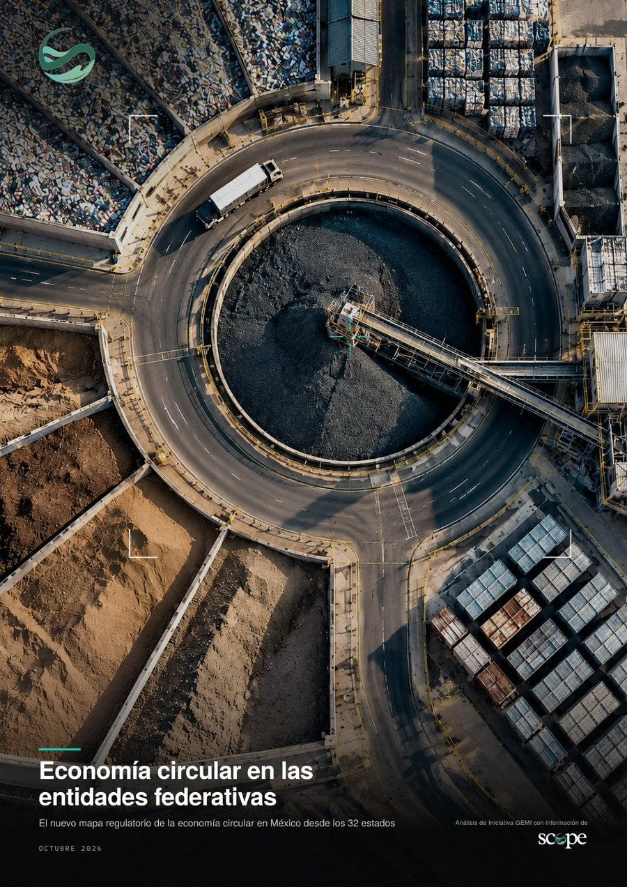

Economía circular en las entidades federativas
El nuevo mapa regulatorio de la economía circular en México, desde los 32 estados.

Lo que encontrarás en el reporte
Cada dato está ligado al documento oficial que lo sostiene: decretos, dictámenes, gacetas parlamentarias y periódicos oficiales de las 32 entidades y de la Federación.
Qué establece, qué falta para que opere y qué le toca a cada orden de gobierno.
La situación de los 32 estados, con su último movimiento y promovente.
Las ocho leyes anteriores a la Ley General y los tres diseños que siguen.
Doce elementos centrales revisados artículo por artículo en los diez ordenamientos.
Las figuras federales y el Acuerdo Nacional de Municipios en el territorio.
Dónde se concentra la industria y qué régimen aplica en cada estado.
Las 46 iniciativas por grupo parlamentario, comisión y etapa del trámite.
Qué distingue a los congresos que más legislan en la materia.
Los frentes que definirán las obligaciones para la industria en los próximos doce meses.
Descarga el reporte
Déjanos tus datos y la descarga empieza de inmediato. Es gratuito.
Octubre de 2026
Listo.
Tu descarga empezó. Si no se abrió, usa el botón.
Descargar PDFTambién puedes consultar los datos estado por estado en el Observatorio de Economía Circular.